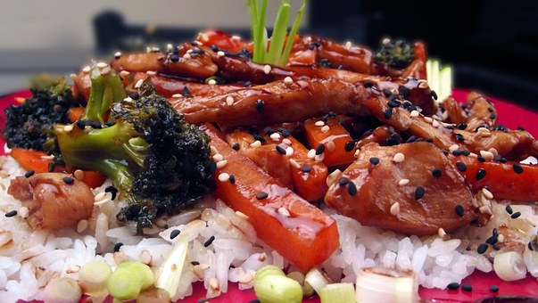
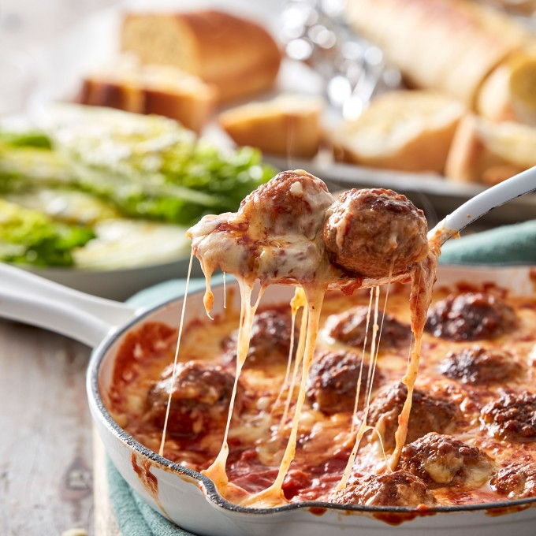
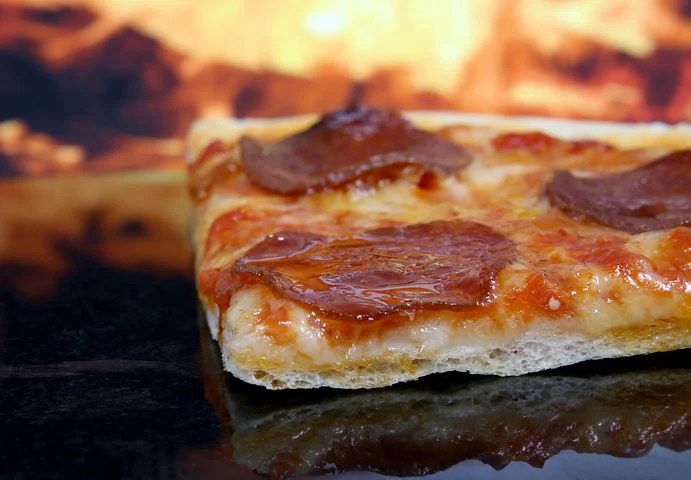
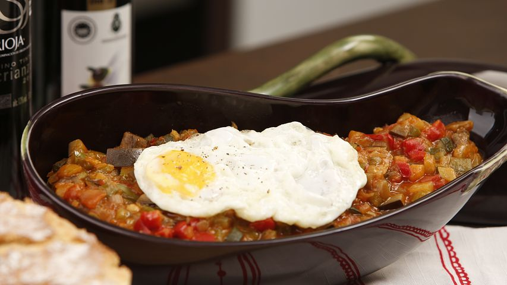
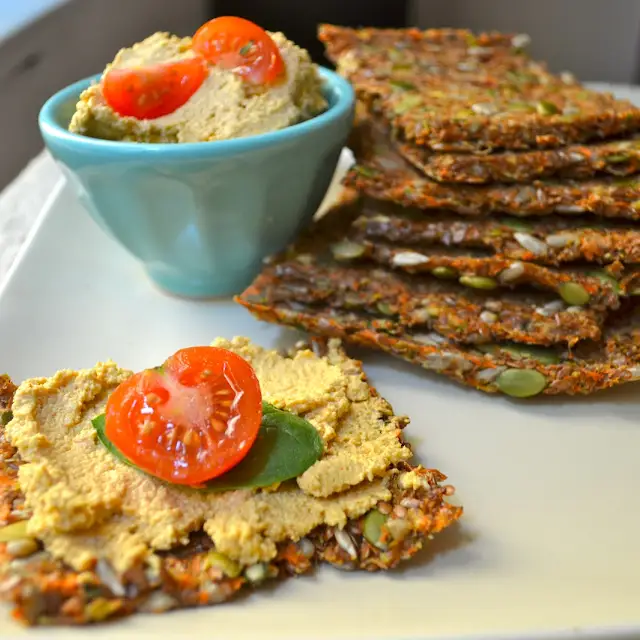
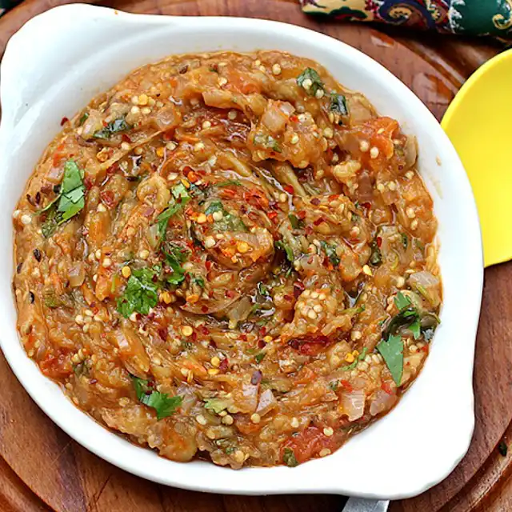

Easy to medium good food, wich you and your family would love!
A delicious spicy rigatoni pasta, combined with pork sausages. It has a sweet acidity and can feed a whole family. This comforting, budget-friendly sausage ragu with pasta is a perfect meal to get full from. And If you can’t it more, you can just freeze the leftovers for another time and it tastes just as good.
This dish is a perfect asian-style meal. It is more suitable for people, and is surprisingly easy to make. The dish contains mainly soy sauce, rice, garlic, honey, steamed asparagus, and of course the chicken.
You can find the recipe in
https://bbcgoodfood.comMake this comforting meatball and garlic bread traybake for a dinner the whole family will enjoy. It has a cook time of approximately 50 min. It can be served in a pan, and I promise that your kids are gonna love the dish. You could buy a pack of meatballs if you’re short on time
You can find the recipe in
https://bbcgoodfood.comThis chocolate chip recipe is really good, and has tons of great reviews. It is slightly moist on the inside, and crunchy on the outside. The chocolate chip cookies take approximately 10 min cook time. If you have lactose intolerance, you could use coconut oil rather than butter. It will still taste as great as the original recipe. The cookies only have 300 kcal per serving, that's pretty impressive and healthy.
My family comes from India, and all of us love samosa. This recipe is a little hard to make, but it pays off when you taste the samosas. It has a beautiful and delicious tamarind Chutney. The inside of the samosas contain a pinch of salt, chilly powder, garam masala, and brown rice. The pastry mainly contains water, wholemeal flour, salt, cumin, and grapeseed oil. You can also use vegetable oil if you don’t have grapeseed oil. I hope you like the dish,and share the recipe with others, so that they can make samosas too.
You can find the recipe in
https://foodnetwork.co.ukPepperoni pizza This Homemade Pepperoni Pizza has everything you want—a great crust, gooey cheese, and tons of pepperoni. The secret to great pepperoni flavor? So when I decided to make pizza at home, I knew it needed to be better than your average delivery. It needed tons of pepperoni, a nice crust, great flavor, and maybe even a surprise or two to put it over the top. I mean who doesn't like a basic homemade delicious pizza.
You can find the recipe in
https://foodnetwork.co.ukHave you ever seen the movie Ratatouille, and the scene when the rat makes a famous french dish to one of the food critics. Well now you could make the same dish. Some of the ingredients are tomatoes, garlic, sugar, eggplant and basil. It contains no meat, and is super healthy.
You can find the recipe in
https://www.yummly.com/recipe/Ratatouille-2297524You can't have Ratatouille without a baguette. The ingredients in french baguette are very simple, flour, salt, yeast and water. Many people like to experiment with it, and see what the difference in the bread would be. The main difference between bread flour and all purpose flour is that bread flour has a higher level of protein which will make the dough have more gluten, and the gluten is what gives the dough springiness. You could also use Gluten free flour, but you will miss some of that protein in the bread.
Do you like carrots, well then I think this recipe goes well for you. It is a simple carrot bread recipe, and has that little bitterness to it. It is healthy and high on vitamin A, Calcium, and vitamin K.
You can find the recipe in
https://www.yummly.com/recipe/Carrot-Sandwich-BreadIndian meals are often full of spices, and there is no doubt that this dish has the signature spice too. Some of the ingredients are eggplant, red onion, tomatoes, green chillies and garlic. It has 40 min cooking time, and only has 200 calories. Baigan Bharta is gluten free and vegan! In India, char roasted eggplant is more of a winter specialty, but you can enjoy it any time of the year!
You can find the recipe in
https://www.yummly.com